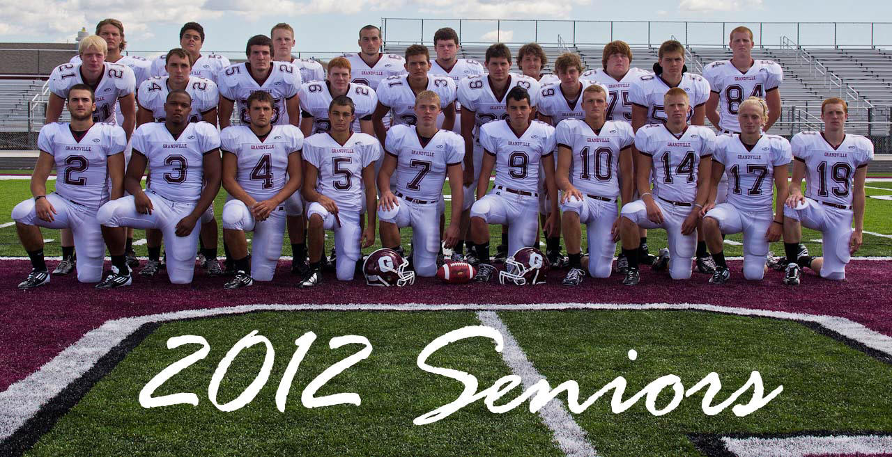

{kind=link}

The Grandville Varsity football team when i started my freshmen year was headed by coach Shaw who kept his team at a steady recod of four and five. Grandville got sick of grandville below average record and losing so many games, Coach shaw was fired and a new coach was hired soon after, a gym teacher from the middle school Coach L(Mike Lapciuk) who had high intentions for the new year he had the boys in the gym everyday lifting and getting big all summer. The season came players were not ready for the new plays and other stuff coach L had in store, The players worked their cans off and finished that first season with an 0 and 9 record, sad and upset they players the very next day after their last game got into the weight room and once again didnt change a thing and worked their cans off the season finally came and the dawgs are very satisfied they win their first three games and come out on top, by the end of the season they are now 4 and 4, third in the OK-RED Conference it all comes down to this last game. After a horrilbe defeat by the team up north the boys are back at it once again to kick the crap out of West Ottawa and shove it down their throats, and go to the play offs with a 5 and 4 record and win it all the title is ours we worked for it, we live and breathe for it, we woud drop everything for it. Now that this time has come it is our turn to take this victory and give Grandville a new reputation and keep all of Grandville's citizens heads high. If the Grandville football team can come in with 70 players and lose 9 games but come abck the next year with barley 40 and be one of the best, We Can Do Anything.